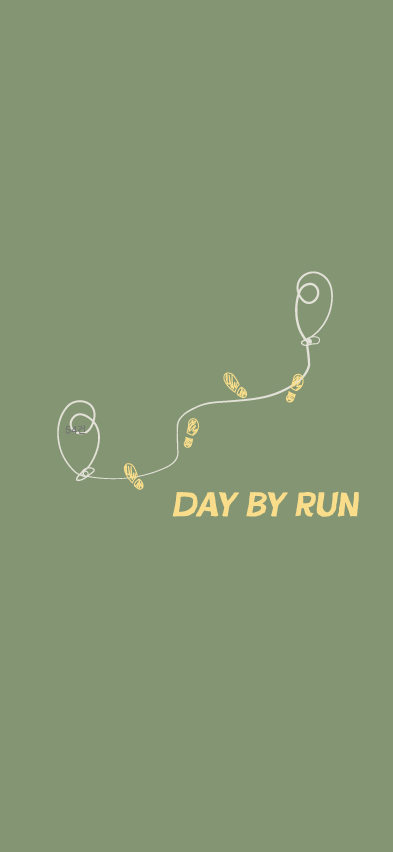

<!DOCTYPE html>
<html lang="en">
<head>
    <meta charset="UTF-8">
    <meta name="viewport" content="width=device-width, initial-scale=1.0">
    <title>Start Page</title>

    <style>
        * {
            margin: 0;
            padding: 0;
            box-sizing: border-box;
        }
        body {
      
            background: #111;           /* 바깥 배경 (앱 밖 영역) */
            min-height: 100vh;
            display: flex;
            justify-content: center;
            align-items: center;
        }

        /* 앱 프레임 (393 x 852 기준) */
        .app {
            width: 100%;
            /* max-width: 393px;          */
            aspect-ratio: 393 / 852;    /* 비율 유지 */
            background: #839573;
            overflow: hidden;
            position: relative;  
        }

        .ref {
            width: 100%;
            height: auto;
            display: block;
        }
        .routeImg {
            position: absolute;
            top: 44.2%;
            left: 50%;
            width: 70%;
            height: auto;
            transform: translate(-50%, -50%);
        }
       .feetImg {
      position: absolute;
      top: 50.5%;
      left: 54.5%;
      width: 46%;
      height: auto;
      transform: translate(-50%, -50%);
      
      opacity: 0;
      animation: feetPop 0s ease-out forwards;
      animation-delay: 1s;  /* route 그려지는 시간 이후 */
    }

    @keyframes feetPop {
      0% {
        opacity: 0;
        transform: translate(-50%, -50%) scale(1);
      }
      60% {
        opacity: 1;
        transform: translate(-50%, -50%) scale(1);
      }
      100% {
        opacity: 1;
        transform: translate(-50%, -50%) scale(1);
      }
    }

    /* name: dissolve 느낌 */
    .nameImg {
      position: absolute;
      top: 59.5%;
      left: 67.5%;
      width: 65%;
      height: auto;
      transform: translate(-50%, -50%);

      opacity: 0;
      filter: blur(6px);
      animation: nameDissolve 0.9s ease-out forwards;
      animation-delay: 2.0s; /* route + feet 끝난 뒤 등장 */
    }

    @keyframes nameDissolve {
      0% {
        opacity: 0;
        filter: blur(6px);
        transform: translate(-50%, -50%) scale(1.05);
      }
      40% {
        opacity: 0.6;
        filter: blur(3px);
      }
      100% {
        opacity: 1;
        filter: blur(0);
        transform: translate(-50%, -50%) scale(1);
      }
    }


    </style>
</head>
<body>
    <div class="app">
        <!--  -->
        
        
        
    </div>

    <script>
  const TOTAL_DURATION = 3500; // 3.2초 뒤 메인으로 이동

  setTimeout(() => {
    window.location.href = "main home.html";
  }, TOTAL_DURATION);
</script>

</body>
</html>